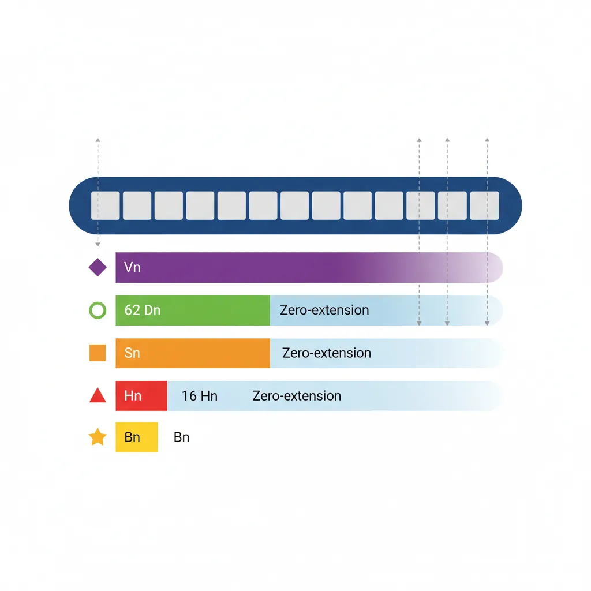
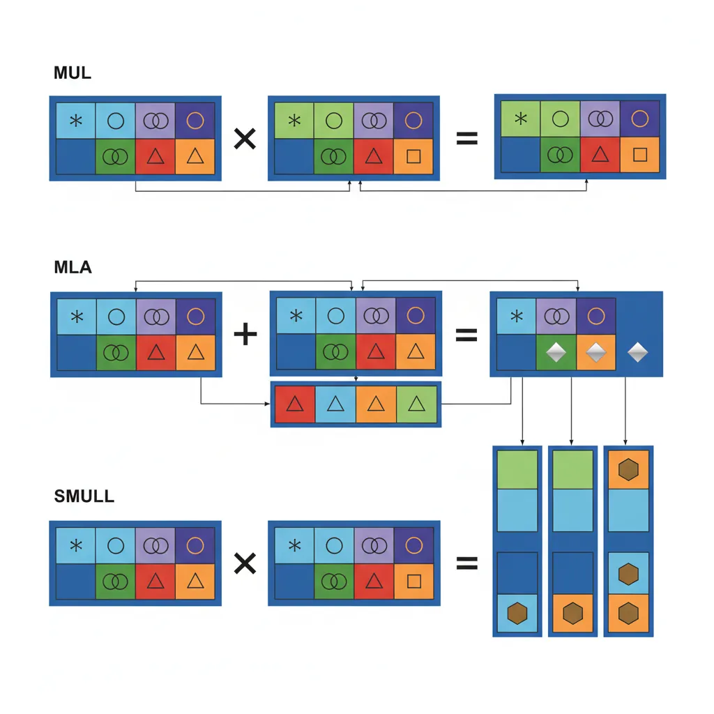
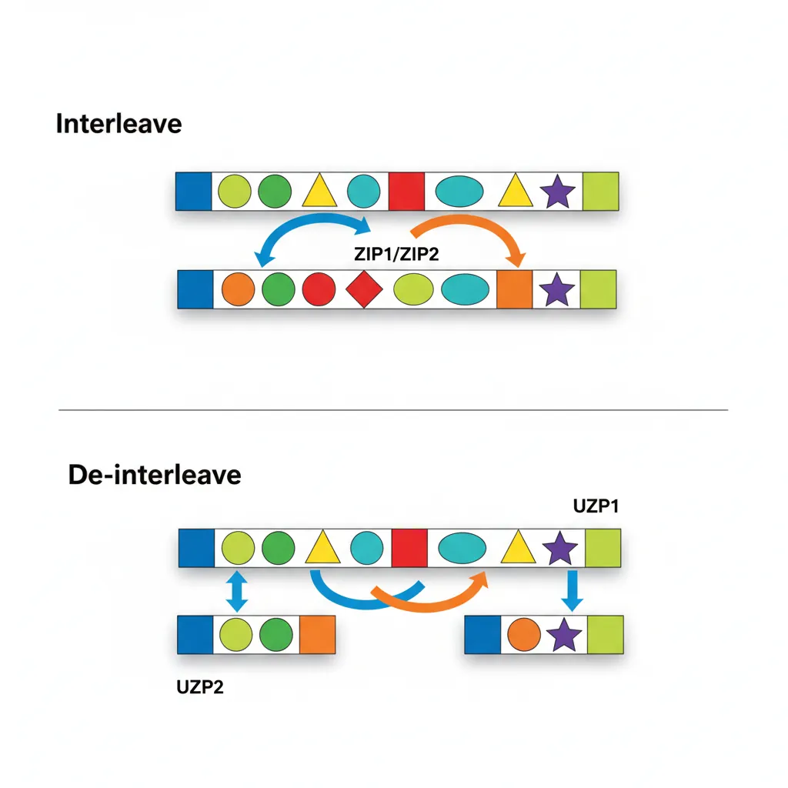
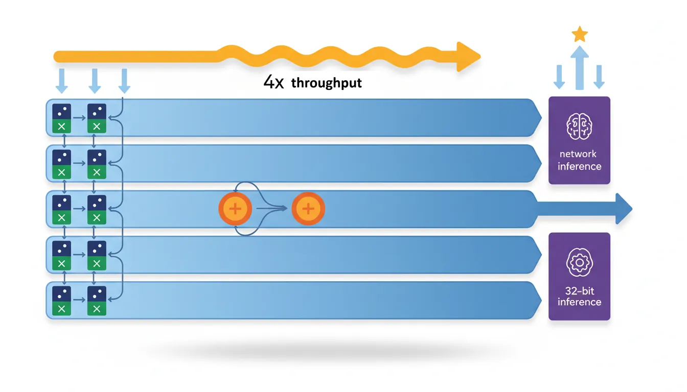
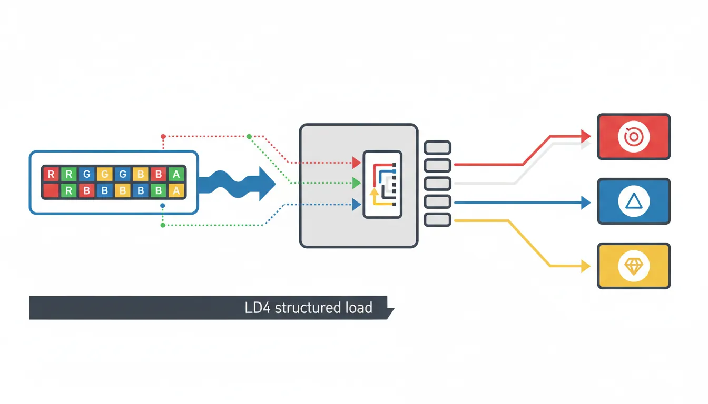

Introduction
ARM Assembly Mastery
Architecture History & Core Concepts
ARMv1→v9, RISC philosophy, profilesARM32 Instruction Set Fundamentals
ARM vs Thumb, registers, CPSR, barrel shifterAArch64 Registers, Addressing & Data Movement
X/W regs, addressing modes, load/store pairsArithmetic, Logic & Bit Manipulation
ADD/SUB, bitfield extract/insert, CLZBranching, Loops & Conditional Execution
Branch types, link register, jump tablesStack, Subroutines & AAPCS
Calling conventions, prologue/epilogueMemory Model, Caches & Barriers
Weak ordering, DMB/DSB/ISB, TLBNEON & Advanced SIMD
Vector ops, intrinsics, media processingSVE & SVE2 Scalable Vector Extensions
Predicate regs, gather/scatter, HPC/MLFloating-Point & VFP Instructions
IEEE-754, scalar FP, rounding modesException Levels, Interrupts & Vector Tables
EL0–EL3, GIC, fault debuggingMMU, Page Tables & Virtual Memory
Stage-1 translation, permissions, huge pagesTrustZone & ARM Security Extensions
Secure monitor, world switching, TF-ACortex-M Assembly & Bare-Metal Embedded
NVIC, SysTick, linker scripts, low-powerCortex-A System Programming & Boot
EL3→EL1 transitions, MMU setup, PSCIApple Silicon & macOS ABI
ARM64e PAC, Mach-O, dyld, perf countersInline Assembly, GCC/Clang & C Interop
Constraints, clobbers, compiler interactionPerformance Profiling & Micro-Optimization
Pipeline hazards, PMU, benchmarkingReverse Engineering & ARM Binary Analysis
ELF, disassembly, CFR, iOS/Android quirksBuilding a Bare-Metal OS Kernel
Bootloader, UART, scheduler, context switchARM Microarchitecture Deep Dive
OOO pipelines, reorder buffers, branch predictVirtualization Extensions
EL2 hypervisor, stage-2 translation, KVMDebugging & Tooling Ecosystem
GDB, OpenOCD/JTAG, ETM/ITM, QEMULinkers, Loaders & Binary Format Internals
ELF deep dive, relocations, PIC, crt0Cross-Compilation & Build Systems
GCC/Clang toolchains, CMake, firmware genARM in Real Systems
Android, FreeRTOS/Zephyr, U-Boot, TF-ASecurity Research & Exploitation
ASLR, PAC attacks, ROP/JOP, kernel exploitEmerging ARMv9 & Future Directions
MTE, SME, confidential compute, AI accelWhy SIMD Matters
A scalar loop iterating over 16 bytes requires 16 separate LDR/ADD/STR cycles — 48 instructions total. NEON processes all 16 bytes in a single LD1/ADD/ST1 triplet: 3 instructions, delivering up to 16× throughput on bandwidth-limited kernels. This is not a theoretical gain — every mobile device you've used relies on NEON for real-time performance:
- Camera ISP: Demosaicing, white balance, and tone mapping on 12 MP+ images at 30 fps
- Audio: AAC/Opus decoding, noise cancellation, and spatial audio mixing
- Cryptography: AES-256 encryption at >1 GB/s (using AES instructions + NEON pipeline)
- ML inference: INT8 quantised neural networks using SDOT at 10+ TOPS effective throughput
Understanding NEON is the single largest performance lever available to ARM assembly programmers — the difference between "demo" and "shipping product" often comes down to SIMD optimisation.
NEON Register Model
V Register Views
Each of the 32 NEON registers (V0–V31) is 128 bits wide. They can be accessed through multiple "views" of different widths — all referring to the same physical storage:
- Qn — Full 128-bit register (used in encoding, rarely in assembly syntax)
- Dn — Lower 64 bits (maps to the old ARM VFPv3 double-precision file)
- Sn — Lower 32 bits (single-precision scalar)
- Hn — Lower 16 bits (half-precision, ARMv8.2-FP16)
- Bn — Lower 8 bits (byte scalar element)
Writing to Dn or any smaller view zero-extends the upper bits of the 128-bit register to zero. This eliminates the partial-register stalls that plagued x86's SSE→AVX transitions — on ARM, there is never a penalty for mixing 64-bit and 128-bit NEON operations on the same register.

Lane Notation (Vn.nT)
All Valid Arrangement Specifiers
V0.16B — 16 × uint8_t lanes | V0.8B — 8 × uint8_t (64-bit form)
V0.8H — 8 × uint16_t lanes | V0.4H — 4 × uint16_t (64-bit form)
V0.4S — 4 × uint32_t or float32 lanes | V0.2S — 2 × uint32_t (64-bit form)
V0.2D — 2 × uint64_t or float64 lanes | V0.1D — 1 × uint64_t (64-bit form)
V0.8H — 8 × float16 (ARMv8.2-FP16)
Scalar Element Access
// Insert and extract individual lanes
INS V0.S[1], W3 // Insert W3 into lane 1 of V0.4S
UMOV W4, V0.S[2] // Extract lane 2 of V0.4S to W4 (zero-extend)
SMOV X5, V0.H[3] // Extract lane 3 of V0.8H to X5 (sign-extend)Vector Arithmetic
ADD / SUB / NEG (Integer)
// Vectorised byte addition: C[i] = A[i] + B[i]
LD1 {V0.16B}, [x0] // Load 16 bytes from A
LD1 {V1.16B}, [x1] // Load 16 bytes from B
ADD V2.16B, V0.16B, V1.16B // 16 additions in parallel
ST1 {V2.16B}, [x2] // Store resultMUL / MLA / MLS
MUL Vd.nT, Vn.nT, Vm.nT performs element-wise multiplication — each lane of Vn is multiplied by the corresponding lane of Vm, with the result truncated to the same lane width. MLA (Multiply-Accumulate) computes Vd += Vn × Vm, and MLS (Multiply-Subtract) computes Vd -= Vn × Vm. These are supported for integer arrangements: 8B/16B, 4H/8H, 2S/4S. There is no 64-bit integer multiply in NEON — for widening multiplication (e.g., 16×16→32), use SMULL/UMULL (signed/unsigned multiply long) which doubles the lane width.

// FIR filter inner loop kernel (multiply-accumulate)
LD1 {V0.4S}, [x0], #16 // Load 4 input samples
LD1 {V1.4S}, [x1], #16 // Load 4 coefficients
FMLA V2.4S, V0.4S, V1.4S // accumulator += input × coeffFADD / FSUB / FMUL / FMLA
Floating-point vector operations use the same lane notation: .4S (4 × float32) or .2D (2 × float64). The critical instruction is FMLA (Fused Multiply-Add): FMLA Vd.4S, Vn.4S, Vm.4S computes Vd += Vn × Vm with a single rounding — more precise than separate FMUL+FADD (which rounds twice). FMLS is the fused multiply-subtract variant.
The scalar-by-lane form is particularly powerful: FMLA Vd.4S, Vn.4S, Vm.S[i] multiplies all 4 lanes of Vn by a single lane i from Vm, then accumulates into Vd. This is the inner kernel of matrix multiplication — broadcast one weight across all output elements.
Widening, Narrowing & Long Ops
Widening operations prevent overflow by doubling the lane width of the result:
UADDL/SADDL— Unsigned/Signed Add Long: 8B→8H, 4H→4S, 2S→2DUADDW/SADDW— Wide Add: adds a narrow vector to a wide vector (8H + 8B → 8H)ADDHN— Add and Narrow to High half: adds two wide vectors and stores the upper half of each resultUADDLV— Long Add across all lanes: accumulates all lanes into a single scalar with widened precision
These are essential for image processing: when summing 8-bit pixel values across a kernel window, intermediate results easily exceed 255. Using UADDL to widen to 16-bit prevents overflow without requiring pre-conversion of the entire image.
Comparisons & Masks
CMEQ / CMGE / CMGT / CMHS / CMHI
NEON comparison instructions produce bitmasks rather than flags. For each lane, the result is 0xFF...FF (all ones) if the condition is true, 0x00...00 if false. This mask can then drive bitwise select operations for branchless SIMD conditionals:
CMEQ Vd.nT, Vn.nT, Vm.nT— EqualCMGE / CMGT— Signed greater-or-equal / greater-thanCMHS / CMHI— Unsigned higher-or-same / higher (no "unsigned greater" naming)FCMEQ / FCMGE / FCMGT— Floating-point comparison equivalents
Compare-against-zero variants (CMEQ Vd.nT, Vn.nT, #0) save a register by not needing a zeroed comparison operand.
// Branchless clamp: dst[i] = min(src[i], 200)
LD1 {V0.16B}, [x0]
MOVI V1.16B, #200 // Broadcast constant 200 to all lanes
UMIN V2.16B, V0.16B, V1.16B // Unsigned min per-lane
ST1 {V2.16B}, [x1]BSL / BIF / BIT (Bitwise Select)
These three instructions implement a per-bit ternary multiplexer — the SIMD equivalent of condition ? a : b without any branches:
BSL Vd, Vn, Vm— Bitwise Select: for each bit, if Vd=1 take from Vn, else from Vm. Vd is the mask (overwritten with result).BIT Vd, Vm, Vn— Bit Insert if True: insert bits from Vm into Vd where Vn=1 (Vd is destination, partially overwritten).BIF Vd, Vm, Vn— Bit Insert if False: insert bits from Vm into Vd where Vn=0.
The typical pattern is: generate a mask with CMGT, then use BSL to select between two computed results per-lane. This replaces scalar if/else chains with zero branch mispredictions — critical in inner loops processing millions of elements.
Permutations
ZIP1 / ZIP2 / UZP1 / UZP2
ZIP (interleave) and UZP (de-interleave) convert between Array of Structures (AoS) and Structure of Arrays (SoA) layouts:
ZIP1 Vd.4S, Vn.4S, Vm.4S— Interleave lower halves:[a0,a1,a2,a3] + [b0,b1,b2,b3] → [a0,b0,a1,b1]ZIP2— Interleave upper halves:→ [a2,b2,a3,b3]UZP1 Vd.4S, Vn.4S, Vm.4S— De-interleave even lanes:[a0,b0,a1,b1] + [a2,b2,a3,b3] → [a0,a1,a2,a3]UZP2— De-interleave odd lanes:→ [b0,b1,b2,b3]
In image processing, camera sensors output interleaved RGGB Bayer data. UZP1/UZP2 can separate even and odd rows for demosaicing, while ZIP1/ZIP2 re-interleave the processed output for display.

// Transpose 2×2 matrix of float32 using ZIP
// V0 = [a0, a1, a2, a3], V1 = [b0, b1, b2, b3]
ZIP1 V2.4S, V0.4S, V1.4S // V2 = [a0, b0, a1, b1]
ZIP2 V3.4S, V0.4S, V1.4S // V3 = [a2, b2, a3, b3]TRN1 / TRN2 / REV64 / REV32 / REV16
TRN (Transpose) selects alternating elements from two vectors. Think of it as a 2×2 matrix transpose applied to each pair of lanes:
TRN1 Vd.4S, Vn.4S, Vm.4S— Takes even-indexed elements:[Vn[0], Vm[0], Vn[2], Vm[2]]TRN2— Takes odd-indexed elements:[Vn[1], Vm[1], Vn[3], Vm[3]]
REV instructions reverse element order within fixed-size groups:
REV64 Vd.16B, Vn.16B— Reverse bytes within each 64-bit half (endian swap for uint64)REV32 Vd.16B, Vn.16B— Reverse bytes within each 32-bit group (endian swap for uint32)REV16 Vd.16B, Vn.16B— Reverse bytes within each 16-bit group (endian swap for uint16)
Combined with TBL, these form the building blocks of SIMD sorting networks and byte-order conversion for network protocol processing.
EXT — Extract Vector
EXT Vd.16B, Vn.16B, Vm.16B, #imm concatenates Vn and Vm into a 256-bit value, then extracts 128 bits (16 bytes) starting at byte offset imm. This is equivalent to a variable byte-rotate across two registers:
EXT V0.16B, V1.16B, V2.16B, #4— Takes bytes [4..15] from V1 and bytes [0..3] from V2EXT V0.16B, V1.16B, V1.16B, #1— Rotates V1 left by 1 byte (same source for both)
EXT is the workhorse of sliding-window algorithms: FIR filters, string search (shifting the comparison window by 1 byte per iteration), and hash computation (byte-stream alignment). It's also used to construct arbitrary permutations when TBL lookup would be overkill.
DUP / INS / MOV
DUP V0.4S, W1 // Broadcast W1 to all 4 float32 lanes
DUP V1.4S, V2.S[3] // Broadcast lane 3 of V2 to all lanes of V1
INS V0.S[2], V1.S[0] // Copy lane 0 of V1 into lane 2 of V0Table Lookup (TBL / TBX)
TBL Vd.16B, {Vn.16B, ...}, Vm.16B performs a parallel byte-level table lookup: for each of the 16 index bytes in Vm, it fetches the corresponding byte from the table formed by 1–4 consecutive V registers (up to 64 bytes total). Out-of-range indices (>= table size) produce 0. TBX is identical except it leaves the destination byte unchanged for out-of-range indices — useful for merging partial lookups.
TBL is one of NEON's most versatile instructions:
- Arbitrary byte permutation: Any reordering of 16 bytes in a single instruction
- Gamma correction: 256-entry lookup table loaded into V0–V15 (using 4× TBL with index masking)
- AES SubBytes: The 256-byte S-box can be implemented as a pair of 4-register TBL lookups
- Base64 encoding/decoding: Character mapping via table lookup
// Byte permutation: reverse each group of 4 bytes using TBL
ADRP x0, byterev_table@PAGE
ADD x0, x0, byterev_table@PAGEOFF
LD1 {V1.16B}, [x0] // Load 16-byte shuffle table
LD1 {V0.16B}, [x1] // Load 16 source bytes
TBL V2.16B, {V0.16B}, V1.16B // Lookup/permute
ST1 {V2.16B}, [x2]Saturating Arithmetic
SQADD / UQADD / SQSUB / UQSUB
Saturating arithmetic clamps results to the representable range instead of wrapping around:
UQADD Vd.16B, Vn.16B, Vm.16B— Unsigned saturating add: result clamped to[0, 255]for 8-bit lanesSQADD— Signed saturating add: clamped to[-128, 127]for 8-bitUQSUB / SQSUB— Saturating subtract (unsigned clamps to 0 on underflow)
On saturation, the FPSR.QC (cumulative saturation) flag is set, allowing software to detect overflow after processing a batch. Saturating operations are essential for audio mixing (clamping summed samples to ±32767 prevents clipping distortion) and image compositing (alpha blending results must stay in [0, 255]).
SQDMULH / SQRDMULH
SQDMULH Vd.nT, Vn.nT, Vm.nT performs a signed saturating doubling multiply returning high half: the full-width product is doubled (Vn × Vm × 2), then the upper half is returned with saturation on overflow. This is the core instruction for Q-format fixed-point arithmetic used in DSP and quantised neural network inference.
For example, in Q15 format (16-bit with 15 fractional bits), multiplying two Q15 values produces a Q30 result. SQDMULH doubles it to Q31 and returns the upper 16 bits — effectively a Q15 result with one extra bit of precision from the doubling. SQRDMULH adds rounding before truncation, reducing the systematic bias of always rounding toward zero.
Reductions
ADDV / MAXV / MINV / FMAXNMV
Reduction (across-lane) instructions collapse all lanes of a vector into a single scalar result:
ADDV Sd, Vn.4S— Sum all 4 lanes → scalar (alsoHdfor .8H,Bdfor .16B)UMAXV / SMAXV / UMINV / SMINV— Unsigned/signed max/min across all lanesFMAXV / FMINV Sd, Vn.4S— Floating-point max/min (propagates NaN by default)FMAXNMV / FMINNMV— FP max/min with number-first NaN handling (ignores NaN, returns the number)
Reductions are inherently slower than per-lane operations (they serialize across the vector width), so optimised code defers them as long as possible — accumulate in vectors, reduce once at the end. FMAXNMV is critical for softmax numerics in neural networks, where a single NaN must not poison the entire output.
// Sum all 4 float32 lanes to scalar
LD1 {V0.4S}, [x0] // Load 4 floats
FADDP V0.4S, V0.4S, V0.4S // Pairwise add: [a+b, c+d, a+b, c+d]
FADDP S0, V0.2S // Pairwise add again: scalar [a+b+c+d]Pairwise (ADDP / FADDP / MAXP)
Pairwise operations take two source vectors and produce results by combining adjacent pairs within each source:
ADDP Vd.4S, Vn.4S, Vm.4S— Lower half = pairwise sums from Vn ([Vn[0]+Vn[1], Vn[2]+Vn[3]]), upper half = pairwise sums from VmFADDP— Floating-point pairwise addSMAXP / UMAXP / SMINP / UMINP— Pairwise max/min
Pairwise add is the efficient way to do two-step horizontal reductions: FADDP V0.4S, V0.4S, V0.4S reduces 4 floats to 2 partial sums, then FADDP S0, V0.2S produces the final scalar sum in just 2 instructions. It's also used for computing 2D convolution border values and transposing accumulator layouts.
Dot Product Extensions
SDOT / UDOT (ARMv8.2-DotProd)
SDOT Vd.4S, Vn.16B, Vm.16B computes four 8-bit dot products in parallel: each group of 4 consecutive bytes from Vn is multiplied element-wise by the corresponding 4 bytes from Vm, and the four products are summed and accumulated into a 32-bit lane of Vd. This provides 4× the throughput of manual widening multiply-add chains (8→16 MUL + 16-bit ADALP), making it the primary instruction for INT8 quantised neural network inference.

The indexed form SDOT Vd.4S, Vn.16B, Vm.4B[lane] broadcasts a single 4-byte group from Vm across all dot products — perfect for matrix-vector multiplication where one operand is a shared weight vector. UDOT is the unsigned equivalent, used when activations are unsigned (common after ReLU in neural networks).
TensorFlow Lite INT8 on Cortex-A76
Google's TensorFlow Lite uses SDOT/UDOT extensively for quantised inference. On a Cortex-A76 (Snapdragon 855), enabling DotProd support improved MobileNet v2 inference from 28 ms to 11 ms — a 2.5× speedup. The improvement comes from replacing 4× SMULL + 4× SADALP sequences with a single SDOT instruction per 4-byte group. ARMv8.2-DotProd is now mandatory on all Cortex-A75+ cores.
// INT8 matrix-vector multiply inner loop with SDOT
// V0.16B = 16 input activations, V1–V4.16B = 4 rows of weight matrix
SDOT V5.4S, V0.16B, V1.16B // Row 0 partial dot products
SDOT V6.4S, V0.16B, V2.16B // Row 1
SDOT V7.4S, V0.16B, V3.16B // Row 2
SDOT V8.4S, V0.16B, V4.16B // Row 3
// Reduce V5–V8 with ADDV to get 4 output accumulator valuesStructured Load / Store
LD1 / ST1 — Single Structure
LD1 is the most common NEON load instruction — it loads contiguous elements into one or more registers without de-interleaving:
LD1 {V0.16B}, [x0]— Load 16 bytes into V0LD1 {V0.16B, V1.16B}, [x0]— Load 32 contiguous bytes into V0 and V1LD1 {V0.16B, V1.16B, V2.16B, V3.16B}, [x0]— Load 64 bytes into 4 registersLD1 {V0.S}[2], [x0]— Load a single 32-bit element into lane 2 of V0 (other lanes unchanged)
ST1 is the store equivalent. The single-lane forms are invaluable for scatter/gather-style access patterns and for loading the final partial vector when the array length isn't a multiple of the vector width.

LD2 / ST2 — De-interleave 2 Channels
// Load interleaved stereo audio and de-interleave
// Memory: [L0,R0, L1,R1, L2,R2, L3,R3, L4,R4, L5,R5, L6,R6, L7,R7]
LD2 {V0.8H, V1.8H}, [x0] // V0 = all Left samples, V1 = all Right
// Process L and R channels independently...
ST2 {V0.8H, V1.8H}, [x1] // Re-interleave and storeLD3 / LD4 — RGB / RGBA De-interleave
// Load 16 RGBA pixels and de-interleave into 4 channel vectors
LD4 {V0.16B, V1.16B, V2.16B, V3.16B}, [x0]
// V0 = all R bytes, V1 = all G bytes, V2 = all B bytes, V3 = all A bytes
// Apply per-channel operation (e.g. gamma correction via TBL)
ST4 {V0.16B, V1.16B, V2.16B, V3.16B}, [x1] // Re-interleavePost-Index & Writeback Forms
All structured load/store instructions support post-index addressing with automatic pointer advancement:
LD1 {V0.16B}, [x0], #16— Load 16 bytes, then advancex0 += 16LD1 {V0.16B, V1.16B}, [x0], #32— Load 32 bytes, advancex0 += 32LD1 {V0.16B}, [x0], x2— Load, then advancex0 += x2(variable stride)LD4 {V0.16B-V3.16B}, [x0], #64— Load + de-interleave 64 bytes, advance pointer
Post-index writeback eliminates separate ADD instructions in tight loops, saving one instruction per iteration. In an image scanline loop processing 16 pixels at a time, this translates to a free pointer increment fused with each load — essential for fully pipelining the NEON execution units on Cortex-A7x cores where instruction decode bandwidth is the bottleneck.
Conclusion & Next Steps
NEON is ARM's primary high-throughput compute engine. In this part we covered the complete instruction repertoire: V register views (Bn through Qn with zero-extension), lane notation (16B/8H/4S/2D), integer and floating-point arithmetic (ADD/MUL/FMLA with fused precision), comparison masks (CMEQ/CMGT producing all-1s/0s) and bitwise select (BSL/BIF/BIT for branchless conditionals), permutations (ZIP/UZP for interleave/de-interleave, TRN for transpose, EXT for sliding windows), table lookup (TBL/TBX for arbitrary byte permutation), saturating arithmetic (SQADD/SQDMULH for audio and fixed-point), reductions (ADDV/FADDP for horizontal sums), dot products (SDOT/UDOT for INT8 ML inference), and structured load/store (LD1–LD4/ST1–ST4 with post-index writeback for zero-overhead loops).
Practice Exercises
- RGBA Brightness Adjustment: Write a NEON kernel that loads 16 RGBA pixels using LD4, multiplies the R, G, and B channels by a scalar brightness factor (using UMULL + shift for fixed-point), clamps using UQADD/UQSUB, leaves the A channel unchanged, and stores back using ST4. Count the instructions per 16-pixel batch.
- Horizontal Sum Benchmark: Implement three different strategies for summing an array of 1024 float32 values: (a) FADDP reduction tree, (b) ADDV per vector + scalar accumulate, (c) accumulate in 4 vector accumulators then reduce at the end. Compare instruction counts and explain which approach maximises pipeline utilisation.
- TBL-based Base64 Encode: Implement a Base64 encoder that processes 12 input bytes → 16 output characters per iteration. Use bit shifts (USHR/SHL/ORR) to extract 6-bit indices, then TBL with a 64-byte lookup table (V16–V19) to convert indices to ASCII characters. Handle the padding case for the final partial block.